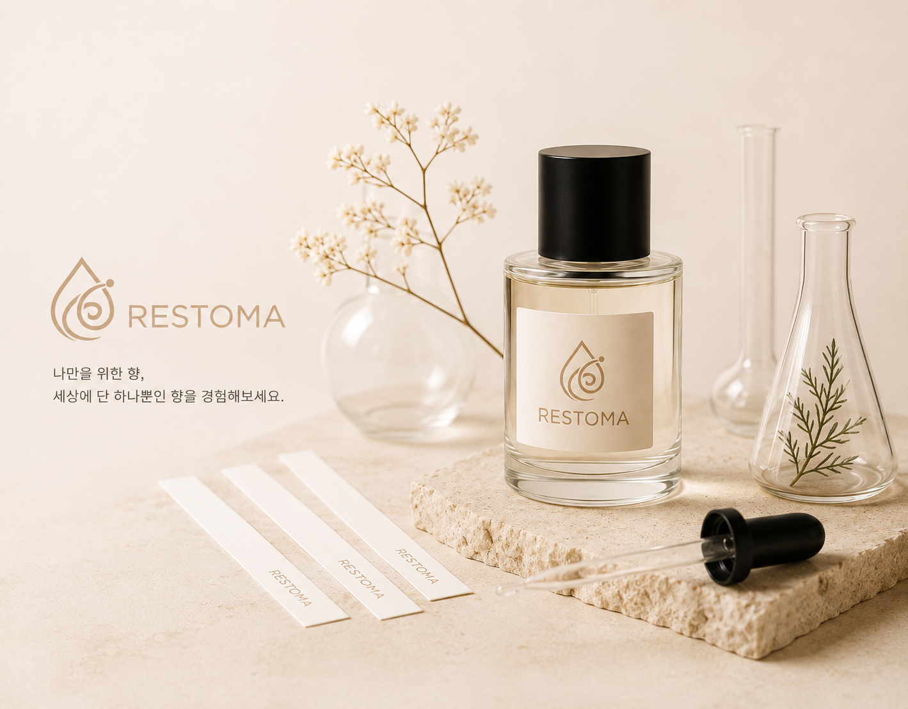

WHY RESTOMA
시험과 과제, 입시 준비로 인한 불안과 스트레스를 향을 통해 완화할 수 있도록 돕습니다.
장시간 업무와 반복되는 일상 속에서 집중력 저하와 피로감을 관리할 수 있도록 합니다.
불규칙한 생활 습관으로 인한 수면의 질 저하를 향기 루틴으로 개선할 수 있도록 돕습니다.
PROCESS
간단한 설문을 통해 스트레스, 피로, 집중력, 수면 상태를 파악합니다.
선호하는 향과 피하고 싶은 향을 입력받아 개인의 취향을 분석합니다.
상태와 취향을 종합하여 어울리는 향료 조합을 추천합니다.
추천 결과를 바탕으로 나만의 향료 배합 방향을 확인합니다.
DIFFERENCE
향 취향 중심
제품 추천 위주
일회성 추천
상태 + 취향 분석
맞춤 향료 배합 추천
개인 기록 기반 관리